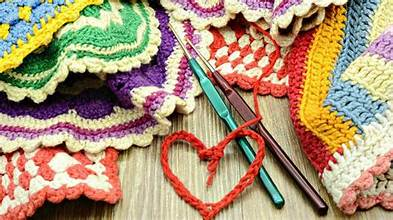

Back in December 2022 I went on my first even cruise with my family. It was such an exciting time because I was able to see so many new things. We went to Cozumel, Belize, and Montego Bay. We did not do all the fancy excursions instead we choose to do bus tours which took us around to all of the places and we got to see the beauty of each place. I also got to bring back with me sourvenirs which remind me of all the places I have been. I will be going on my 3rd cruise in May and I look forward to it and cannot wait to see all the beautiful sites. If you have not though about cruising before I recommend it. It might suprise you just how great they can be.
Crocheting. A past time that so people might be very familiar with. While others mught think it is a hobby just for old people but that's knitting. I started out with this hobby becuase I wanted to make my very own plushies. My family purchased me a beginner crochet set from Amazon and it have several small acrylic yarn balls. I decided to start with making a hat which was trial and error. In the end, I got the hang of it but this opened up a whole can if worms. It showed me what being creative and making your own things entails. The ideas you have in your head do not always translate over in the reality. Truth be told, I do not like anything that I have created. It is too small, too big, not tight enough, and just plain ugly. I have unraveled many of my projects and repurposed the yarn for other things. This hobby that I though would be relaxing has turned into and my hands crapping becuase I have been holding a needle like my life depends on it for 5 hours straight. Even through all of this rambling one thing remains true and that is that I am so glad I started crocheting. I am not great and I could do a whole lot better, but it has taught me to believe in myself and that I am able to create something beautiful even if it is not in my eyes. So I shall take these lessons with me and let us see just what more I am able to do.
